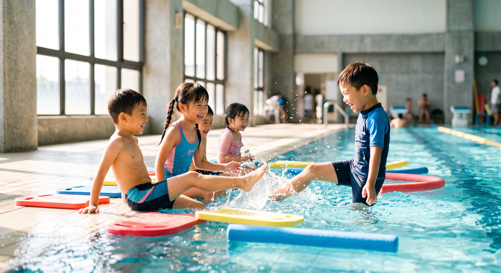

不只是訓練場，更是櫻雪品牌的核心據點。
從潛水考證到游泳教學，從兒童玩水到成人水適能——
這裡有最舒服的水溫、最乾淨的水質，
和像朋友一樣的教練團隊。

無論是潛水教練、游泳新手、還是想維持體態
考取 OW / AOW 證照的第一站。9 條水道同時教學不壅擠，精緻小班確保安全與學習品質。所有潛水裝備現場提供。
分齡分級教學，從 4 歲玩水啟蒙到競技訓練。溫柔耐心的教練群，讓孩子愛上游泳、不怕水。親子共游也歡迎。
零基礎到進階，一對一或小班制。水中有氧、復健水療、鐵人三項游泳訓練——量身打造你的水上計畫。
包道訓練、泳池派對、水中攝影、團體包場——歡迎各單位與教練群洽詢合作，靈活時段與優惠方案。
你只需要人到，其他我們準備好
臭氧消毒 ＋ 紫外線殺菌，24 小時循環過濾系統。水質透明到池底字樣清晰可見——業界最高標準，連續 25 年無違規紀錄。
獨立淋浴間、吹風機區、置物櫃（附密碼鎖）、飲水機、休息座椅區。無障礙坡道，友善行動不便者。
BCD 14 套、調節器 12 組、面鏡 28 支、蛙鞋 30+ 雙、防寒衣各尺寸充足。全套正廠裝備，定期安檢。
台北市中心，捷運 3 分鐘
淡水信義線
信義安和站 2 號出口
步行 3 分鐘
235 / 292 / 33 路
至仁愛安和路口
下車即達
周邊收費停車場多處
仁愛路沿線停車格
建國高架下停車場
台北市大安區仁愛路四段 130 號
（仁愛圓環旁，近誠品敦南原址）
第一次來？先約免費參觀，看看水質、認識教練、感受氛圍。